Quick Start
Choose the setup that matches what you want to try. The commands are the same on Linux, macOS, and Windows.
One machine: a standalone workstation
Use this when you want to experiment with netidx on one development machine. Install Rust if necessary, then run:
cargo install netidx-tools
netidx admin workstation install --with-service
This installs a local resolver and matching client rooted at /local. Start a
publisher in one terminal and leave it running:
netidx publisher
/local/hello|string|hello from netidx
In another terminal, read the value:
netidx subscriber -o /local/hello
The configuration lives in the platform's normal per-user configuration
directory: ~/.config/netidx on Linux, ~/Library/Application Support/netidx
on macOS, and %APPDATA%\netidx on Windows.
Several machines: a secure local network
This walkthrough creates one TLS-secured resolver that is also the admin domain's CA, then joins a workstation to it. It uses the interactive TUI throughout. Install the tools on both machines first:
cargo install netidx-tools
The names and addresses in these screenshots are examples. Use a domain and LAN addresses appropriate for your network.
Create the admin domain and resolver
On the machine that will remain running as the resolver, start the TUI:
netidx admin
1. Start the installation. On a fresh machine, read the welcome message and press Enter.

2. Select Resolver. Use the arrow keys to select Resolver, then press Enter.

3. Create the admin domain. Select Create a new admin domain (creates a CA). This creates the admin domain's one active CA on this resolver host.
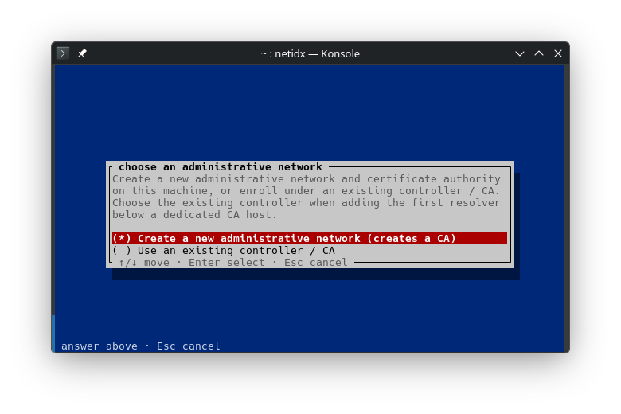
4. Acknowledge the CA setup. The installer explains that a new admin domain needs a certificate authority. Press Enter.

5. Name the admin domain. Enter the domain name under which this admin
domain will be discovered. The example uses local.

6. Record the CA identity. The new CA displays a glyph and grouped fingerprint. This is the identity that joining machines must confirm. Save it somewhere the workstation operator can verify independently, then press Enter.

7. Store the recovery password off the machine. This password can unlock the CA vault after loss of the original host. Store it in your normal secrets or disaster-recovery system before acknowledging the screen; it cannot be shown again.
The credential visible below belonged to the deleted, disposable CA used for this walkthrough. Never publish a recovery password for a live CA.

8. Choose the admin-server address. Enter a LAN address that other machines
can reach, not a loopback address. The example resolver is 192.168.1.3.

9. Choose the admin-server port. The conventional port is 4565; accept it
unless it conflicts with your network policy.

10. Create the first administrator. Enter the name this administrator will use when authorizing enrollment and other CA operations.

11. Set the administrator password. The password is masked while you type and is stored only as an Argon2 password verifier in the CA vault.

12. Continue to the resolver. The CA is now installed. Press Enter to configure the resolver role on the same machine.
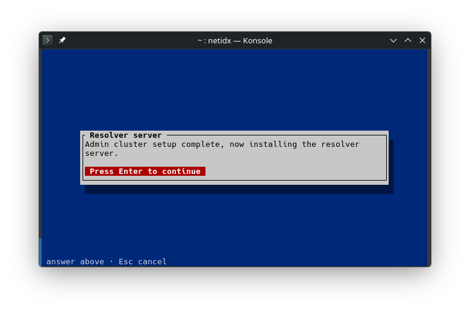
13. Select TLS authentication. This secures and authenticates data-plane connections between the resolver and its clients.

14. Name the resolver certificate. Enter the resolver's DNS label. It is
joined with the admin domain name to form the certificate name; this
example becomes resolver.local.

15. Protect the resolver private key. Choose seal when the machine has a supported TPM or Secure Enclave. Sealing binds the key to this machine while still allowing unattended service startup. Password protection is the portable fallback; none is suitable only for disposable systems.

16. Choose the resolver address. Enter the reachable LAN address on which the resolver will accept data-plane connections.

17. Choose the resolver port. The conventional resolver port is 4564.

18. Register the OS service. Select Yes so the CA, resolver, and supporting components start automatically.

19. Finish the install. The result confirms that configuration was written and the service was registered. Dismiss it with any key.

20. Check local status. The TUI now shows the resolver as running and offers its local administrative operations.

Join the workstation
On the workstation, start the same TUI:
netidx admin
1. Start the installation. Read the welcome message and press Enter.

2. Select Workstation. A workstation combines a local /local resolver
with a matching client configuration.

3. Join the admin domain. Select Join an admin domain rather than installing a standalone workstation.
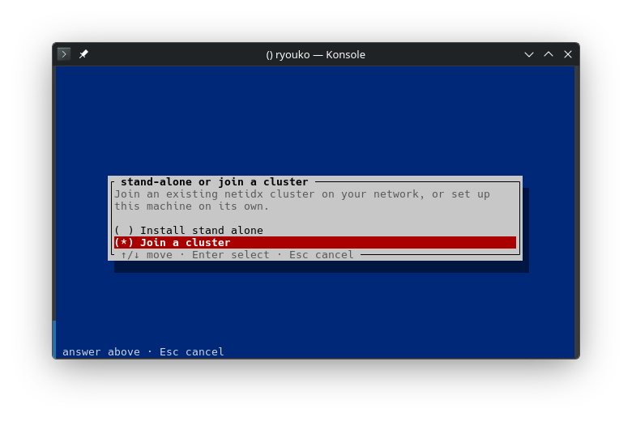
4. Wait for LAN discovery. The TUI searches for admin domains advertised on the local network.
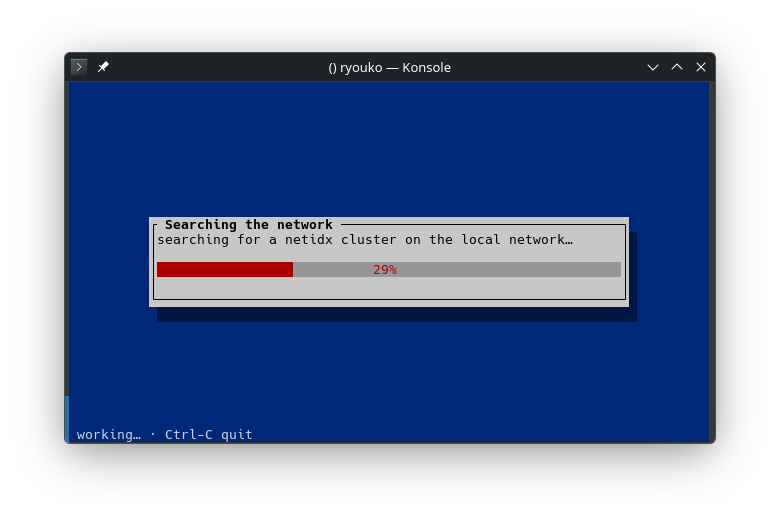
5. Select the discovered admin domain. The discovery result is only a candidate; the next screen performs the human trust check before anything sensitive is sent.

6. Confirm the CA identity. Compare both the glyph and grouped fingerprint with the copy recorded on the resolver. Reject the admin domain if either differs. Once accepted, the workstation pins all further setup to this exact CA.
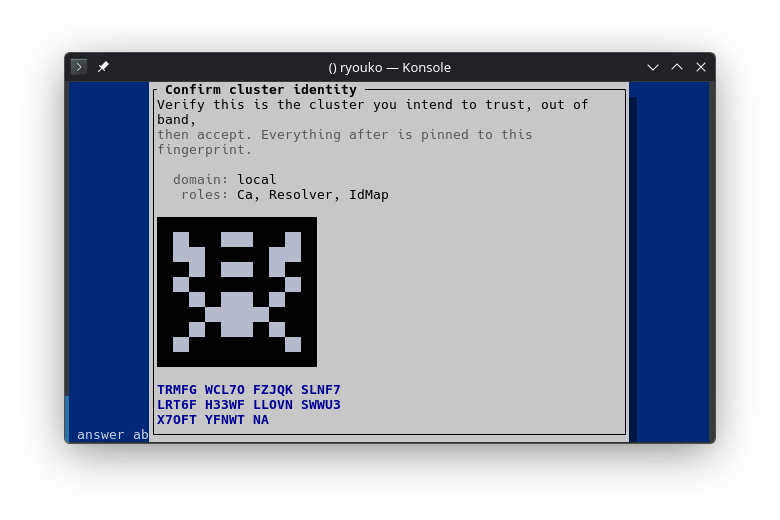
7. Choose the workstation certificate name. This is the workstation's TLS
identity. The example uses eric.local.
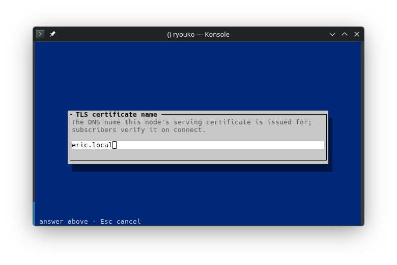
8. Protect the workstation private key. Choose hardware sealing when it is offered, password protection when portability is required, or none only for a disposable machine. This lab workstation did not offer hardware sealing.
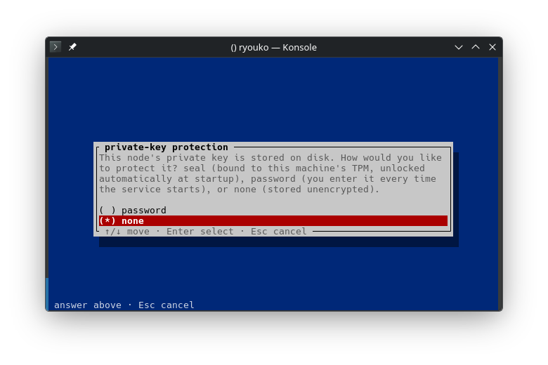
9. Authorize enrollment now. This walkthrough has a CA administrator at the workstation, so select Yes. It is safe to enter the administrator password because the CA identity was verified first. Select No when the administrator is elsewhere; the request will wait in the CA's Enrollment Queue for remote approval instead.
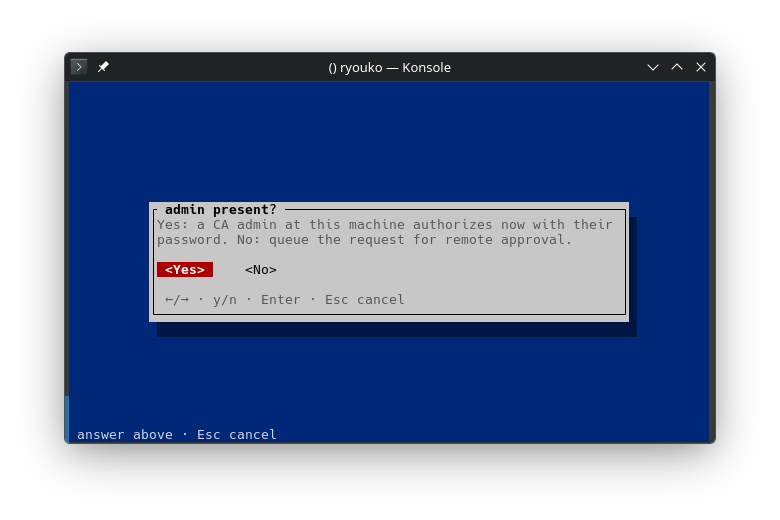
10. Choose the id-map groups. The default users group is suitable for this
example. The authorizing administrator's policy limits which groups may be
assigned.
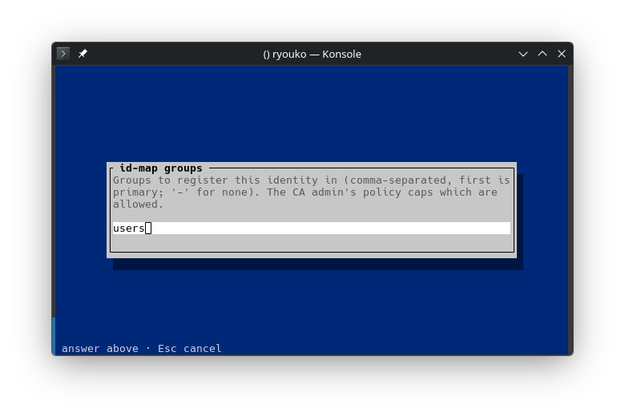
11. Enter the administrator name. Use the administrator created on the resolver.
12. Enter the administrator password. It is masked, used once against the already verified CA, and is never retained by the workstation.
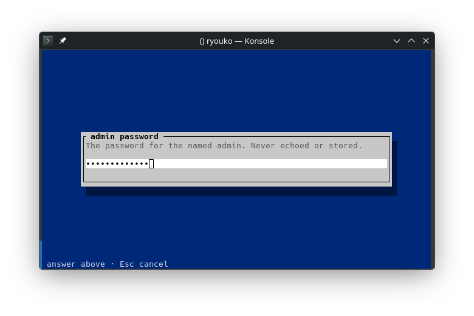
13. Register the OS service. Select Yes so the local resolver and client support services start automatically.
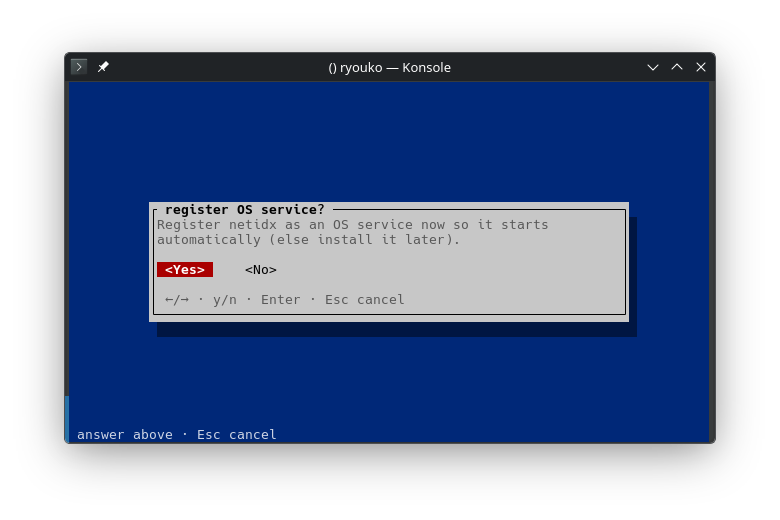
14. Finish the install. Dismiss the successful result with any key.
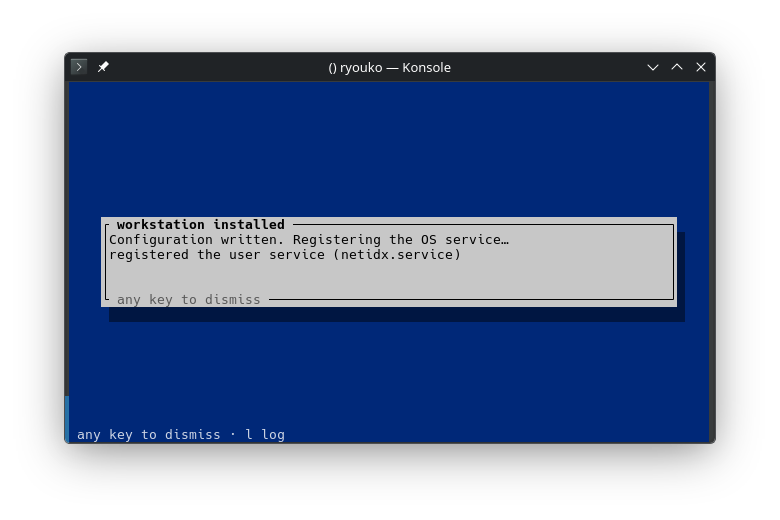
15. Check local status. The workstation is now running and enrolled in the TLS admin domain.
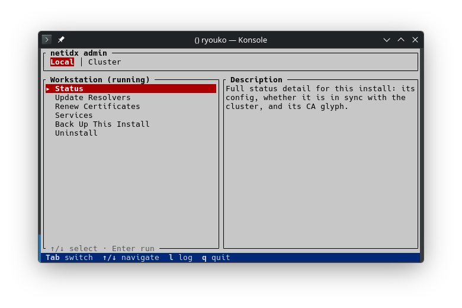
Try the secure connection
On the resolver machine, start a publisher and leave it running. Fresh resolver
permissions give each authenticated identity full control under
/users/<identity>; the resolver certificate created above is
resolver.local:
netidx publisher
/users/resolver.local/quick-start/message|string|hello from the resolver
On the workstation, read it through the local resolver. The local resolver follows its configured parent to the network resolver, and the connection is authenticated with the certificate issued during enrollment:
netidx subscriber -o /users/resolver.local/quick-start/message
/users/resolver.local/quick-start/message|string|"hello from the resolver"
This single-resolver layout is intentionally small. A serious installation normally runs at least two resolver members per resolver cluster so they can be restarted one at a time without interrupting clients. Continue with Administration for redundant resolver clusters, authorization, backup and recovery, and larger hierarchies. The admin plane is a provisioning and operations convenience; netidx's data plane also works with configuration files maintained entirely by other tools.
If something goes wrong, rerun the relevant command with RUST_LOG=debug for
detailed diagnostics.